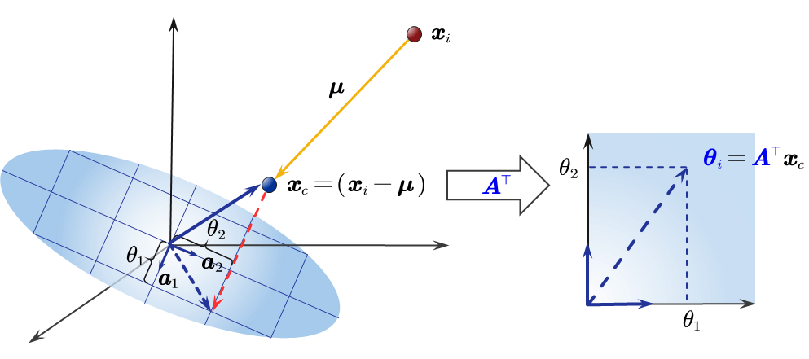
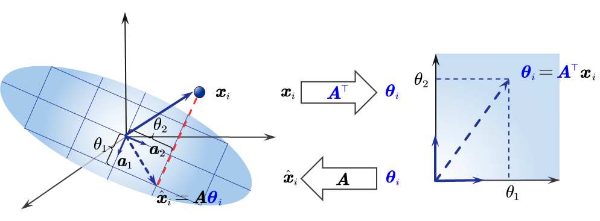
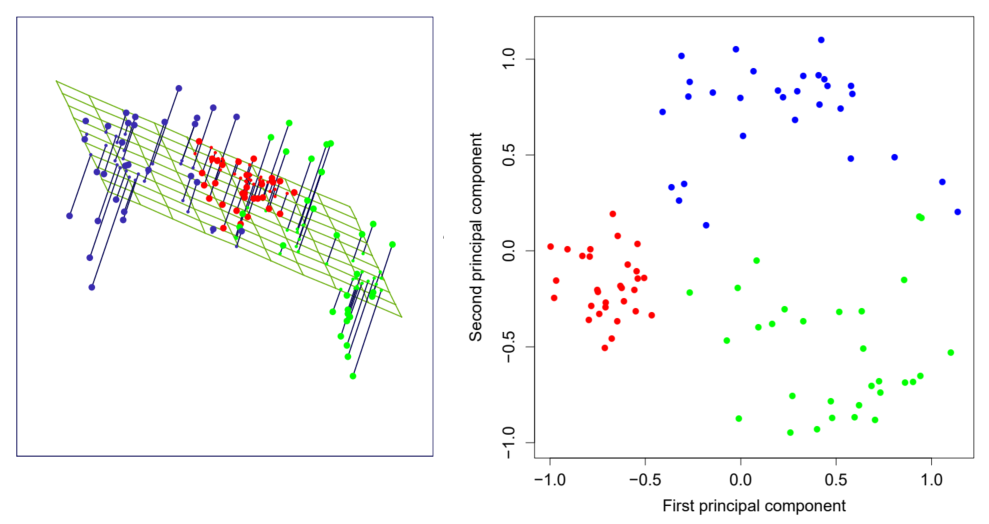

PCA的几何直觉
降维的概念
在许多实际问题中，我们观察到的数据样本，例如x1,…,xn，是高维空间Rd中的点。这里的d指的是数据的维度或特征的数量。 一个关键的设定是，这些数据样本是没有标签 (without labels) 的。这意味着我们不知道它们预先属于哪个类别或具有什么样的数值。这正是无监督学习 (unsupervised learning) 的典型场景。
降维 (Dimensionality reduction) 的核心目标是：为每一个高维数据点xi∈Rd，在一个更低维度的空间中找到一个对应的点θi∈Rk，并且这个新的表示θi应该尽可能地“接近”或“代表”原始的xi。 xi→θi 其中，新空间的维度k远远小于原始维度d（即k≪d）。 这个思路与监督学习中常用的核方法 (kernel methods) 形成了对比。核方法有时会将数据映射到更高维度的空间，以便使数据线性可分。而降维的目的恰恰相反，即压缩数据的维度。
- 减少冗余信息：在高维数据中，许多特征可能是高度相关的（例如，一个人的身高和脚长），或者根本不包含有效信息（噪声）。降维旨在提取数据中最主要、最本质的结构，丢弃这些冗余和噪声。
- 提升算法的计算效率：绝大多数机器学习算法的计算复杂度和内存需求都会随着数据维度d的增加而急剧上升。将数据从高维d降到低维k后，后续的算法（如聚类、分类）将运行得更快。
- 防止过拟合：这一点在将降维作为监督学习的数据预处理 (data preprocessing) 步骤时尤为重要。当样本数量n小于特征维度d时（即n<d的情况，也常被称为“维度灾难”的一部分），模型极易学习到训练数据中的噪声而非潜在规律，导致过拟合。通过降维减少d，可以有效缓解这个问题。
降维是无监督学习中的一项重要技术。实现降维主要有两大类方法：
- 特征选择 (Feature selection)：从原始的d个特征中，直接挑选出一个包含k个特征的子集，而丢弃其余的d−k个特征。
- 特征提取 (Feature extraction)：通过组合或变换原始的d个特征，来创造出k个全新的特征（即θi的k个分量）。
接下来的讨论主要集中在特征提取上，主成分分析 (PCA) 正是特征提取中最经典和最常用的一种方法。
在深入研究PCA的数学模型之前，建立一个强大的几何直觉至关重要。PCA的核心问题是：我们如何将一个在高维空间（例如1000维）中分布的复杂“数据点”，用一个更简单、更低维度的“形状”来近似表示，同时尽可能多地保留其“本质”信息？
对于PCA来说，这个“更简单的形状”被严格限制为线性的：即一条直线（1D）、一个平面（2D）或一个“超平面”（k维）。
- 最小化重构误差：找到一个“离所有点最近”的平面。
- 最大化投影方差：找到一个能让数据“投影后最分散”的平面。
最小化重构误差
这种视角将PCA视为一个数据压缩与解压缩（重建）的过程。
- 编码 (Encoding)：将一个高维数据点x（例如3D空间中的一个点）用一个更低维的坐标θ（例如2D坐标）来表示。
- 解码 (Decoding)：使用这个低维坐标θ，尝试“重建”回原始的高维数据点，得到一个近似点x^。
由于在“编码”过程中必然丢失了信息，重建点x^几乎永远不等于原始点x。 重构误差 (Reconstruction Error) 就是指原始点x与其重建点x^之间的几何距离∥x−x^∥。 PCA的目标就是：找到一个低维子空间，使得所有数据点的平均重构误差最小。
情景一：从2D降维到1D
让我们从最简单的情况开始。假设我们的数据是2D空间（一个平面）中的一团数据点（数据中心为原点）。我们的目标是将其降维到1D，即找到一条直线来最佳地代表这团数据点。
假设我们任意选择了一条穿过数据中心的直线U。对于这团数据点中的任何一个原始数据点x（以红色'x'表示，它不在直线上），这条直线上的哪一个点是重建点x^呢？ 我们可以在直线U上选择无数个“候选重建点”x~。它代表了我们“压扁”x后的一种可能性。  MATHEMATICS FOR MACHINE LEARNING
MATHEMATICS FOR MACHINE LEARNING我们希望重建点x^与x的距离最短，这样才能让信息损失最小。可以绘制一个辅助图表，Y轴代表了上图中红线的长度（即距离∥x−x~∥，重构误差）。X轴代表了“候选点”x~在橙色直线上的位置。随着“候选点”x~沿着橙色直线移动，它与x的距离会先减小再增大，并且在图的最低点存在一个唯一的最小值。  MATHEMATICS FOR MACHINE LEARNING
MATHEMATICS FOR MACHINE LEARNING几何上，这个距离最短的点是唯一的，它就是x向直线U所作的正交投影 (Orthogonal Projection)（即垂足）。任何其他直线上的点都会与x构成一个直角三角形的斜边，其长度必定更长。 因此，重构误差∥x−x~∥就是指原始点x到它在直线U上的正交投影点x^之间的垂直距离。 我们刚才只是假设了一条任意的直线U。PCA的真正任务是找到那条“最好”的直线，使所有数据点到这条直线的总重构误差（即所有垂直投影距离的平方和）最小。 你可以想象，PCA会“旋转”这条直线U（因为它必须穿过数据中心）。 - 如果直线U垂直于数据点“摊开”的方向，那么所有点到它的投影距离都会非常远，总误差会非常大。
- 如果直线U顺着数据点“摊开”的方向，那么所有点“掉落”到这条直线上的垂直距离就会非常近，总重构误差会非常小。
PCA的最终解——第一主成分 (PC1)——就是那条使总重构误差平方和最小的最佳直线。在下图中，总重构误差就是每一个数据点到直线的正交距离的平方和。
 MATHEMATICS FOR MACHINE LEARNING
MATHEMATICS FOR MACHINE LEARNING你可能会觉得这条最佳直线（PCA的解，第一主成分）和线性回归寻找的最佳直线相同或类似。但它们在目标上是根本不同的。我们以“鞋码”为例。
 Foundations of Machine Learning
Foundations of Machine Learning在左图，我们使用线性回归的目标是根据US size预测European size。这里最小化的是垂直距离 (Vertical Distance) 的平方和（即在European size轴上的差值）。
min∑(yi−y^i)2 在右图，我们使用PCA的目标是找到一个1D子空间（一条直线）来最佳地代表(US size, European size) 这团2D的数据点。这里最小化的是正交距离 (Orthogonal/Perpendicular Distance) 的平方和。
min∑∥xi−x^i∥22 因此，尽管线性回归的拟合直线和PCA的第一主成分直线在视觉上几乎重合。但是它们的目标截然不同。
情景二：从3D降维到2D
这个直觉可以轻松推广到更高维度。从2D降维到1D是寻找最佳直线，那么，从3D降维到2D就是在寻找最佳平面。
这时的数据是3D空间中的一团“点云”，我们的目标是将其降维到2D，即找到一个平面来最佳地代表这团点云。
- 误差衡量：对于任意一个穿过数据中心的2D平面U，一个3D数据点x的重构误差是它到这个平面的正交投影距离（即x与它在平面上的“垂足”x^之间的距离）。
- PCA目标：自动“旋转”这个2D平面U，直到找到一个最佳的平面方向，使得所有数据点到这个平面的总重构误差（平方和）最小。
这个由PCA找到的最佳2D平面，就是由第一主成分 (PC1) 和第二主成分 (PC2) 所共同张开的平面。
 Machine Learning Refined
Machine Learning Refined例如，在上图中，原始数据点xp 分布在 3D 空间中。 - 粉色平面是PCA试图找到的最佳2D平面。从每个数据点指向平面的短线，其长度就代表了重构误差∥xp−x^p∥2。PCA的目标就是调整这个平面的朝向，使得所有这些短线的平方长度之和最小。
- 这个最佳平面由两个基向量c1和c2（即主成分方向）所张成。当我们把它单独拿出来，留下数据点在上面的投影点wp，就得到了原始数据xp的低维表示（或称为“主成分得分”）。这个过程就像是把 3D 空间中的点“拍扁”到 2D 平面上，并只记录它们在平面上的(c1,c2) 坐标。
- 我们将这个平面和“投影点”放回 3D 空间。通过比较左图（原始数据）和右图（重建数据），我们可以直观地看到 PCA 降维造成了多少信息损失（即原始数据点偏离这个平面的程度）。
同样地，这与二元线性回归不同，因为线性回归的误差衡量的是点到平面的垂直距离（在下图中，沿Y轴方向）。
最大化投影方差
这是理解PCA的第二种，也是在数学上等价的一种几何视角。这种方法不关注“误差”，而是关注“信息”。它的核心假设是：方差=信息。
- 一个数据维度，如果所有点在它上面的值都几乎相同（方差很小），那么这个维度对我们区分数据点几乎没有帮助，它包含的“信息”很少。
- 相反，一个数据维度，如果点在它上面的值分布得很开（方差很大），那么这个维度就提供了丰富的信息来区分不同的数据点。
PCA的目标就是：找到一个低维子空间，当我们把所有数据点“投影”到这个子空间上时，这些投影点的方差最大。
情景一：从2D降维到1D
让我们再次回到二维数据点的例子。下图中，数据点呈一个倾斜的椭圆形。我们的目标是找到一条1D直线来代表它。例如一条穿过数据中心（假设数据已中心化到原点）的直线U。现在，我们将所有数据点都正交投影到这条直线U上，得到一堆1D的“影子”点。  Machine Learning Refined
Machine Learning RefinedPCA的任务就是“旋转”这条直线U，尝试所有可能的“方向”，并寻找那个“最佳方向”。 - 一个“坏”的方向：假设我们选择的直线U与椭圆的“短轴”重合。当我们把所有点投影到这条直线上时，它们会“挤作一团”，非常接近原点。这些“影子”点的方差会非常小。PCA认为这是一个“信息量很低”的坏方向。
- 一个“好”的方向：假设我们选择的直线U与椭圆的“长轴”重合。当我们把所有点投影到这条直线上时，它们会“摊得非常开”。这些投影点的方差会非常大。
PCA的最终解——第一主成分 (PC1)——就是那条使得投影方差最大化的最佳直线。它完美地捕捉了数据中最主要的“变化模式”。
 The Hundred-Page Machine Learning Book
The Hundred-Page Machine Learning Book“最大化方差”的视角也让我们能优雅地定义所有后续的主成分。
- 第二主成分 (PC2)：在找到了PC1（方差最大的方向）之后，我们还需要寻找“次要”的信息。PCA会在所有与PC1正交（垂直）的方向中，再次寻找一个能使投影方差（即“剩余方差”）最大的新方向。在2D椭圆的例子中，这恰好就是椭圆的“短轴”方向。
- 第三主成分 (PC3)：如果是在3D空间，PC3将会是在所有与PC1和PC2都正交的方向中，能最大化剩余方差的方向。
情景二：从3D降维到2D
现在我们可以将这个直觉应用到3D降维到2D的情况。例如数据点是3D空间中的一团点云，形状可能像一个“扁平的煎饼”。
 白话机器学习算法
白话机器学习算法- PCA找到PC1：这是“煎饼”直径最大的那个方向（方差最大）。
- PCA找到PC2：这是在垂直于PC1的平面上，与“煎饼”直径最大方向垂直的方向（剩余方差最大）。
- PCA找到PC3：这是同时垂直于PC1和PC2的方向（即“煎饼”的高度方向）。
以下图为例，PC1就是这个“椭圆”形数据的长轴方向，PC2就是短轴方向。
 Machine Learning Refined
Machine Learning Refined当我们要求PCA将数据降到2D时，它会选择那些方差最大的轴，即PC1和PC2（下图中的红色箭头）作为2D平面的基向量c1和c2。我们将这些数据点投影到(c1,c2)轴（即主成分轴）的平面上，可以看到数据在c1轴（方差最大的方向）上的分布最广，在c2轴上的分布次之，从而保留了最多的原始信息。  Machine Learning Refined
Machine Learning Refined回到原本的3D空间，所有重建点（红色点）都完美地落在了那个最优的2D平面上，形成了原始数据（左侧面板中的灰色点）的最佳2D近似。
因此，PCA既是一个降维（编码）工具，也是一个数据重建（解码）工具。它在“最小化重建误差”和“最大化投影方差”之间找到了平衡，而这个过程在数学上等价于一个线形自动编码器 (Linear Autoencoder)。
PCA的局限性
PCA的建立在一个核心假设之上：数据的内在结构是线性的（即它可以用一个“扁平”的直线或平面来很好地近似）。
 The Elements of Statistical Learning Data Mining
The Elements of Statistical Learning Data Mining- 非线性（弯曲）结构：想象一下数据分布在一个“瑞士卷”或“半球形”的非线性流形上。PCA无法“理解”这种弯曲，它会尝试找到方差最大的2D投影平面。这会导致一个灾难性的结果：在3D空间中本应彼此远离的点（例如在“瑞士卷”的上下两面），在被PCA强行“压扁”到2D平面后，可能会重合在一起。
一个合理的降维方式是像下图这样，使用一个同样弯曲的曲面来近似“瑞士卷”数据。
 Foundations of Machine Learning
Foundations of Machine Learning- 方差与信息的脱节：PCA只关心“方差”，而不关心“信息”。例如下图是一个用于分类的数据集，其中两个类别（红点和蓝点）在一个方差很小（垂直方向）的维度上可以被完美分开，但在一个方差很大（水平方向）的维度上完全重叠。PCA在降维时，会毫不犹豫地保留方差最大的水平方向，而丢弃方差最小但对分类至关重要的垂直方向，导致两个类别在降维后完全混合，无法区分。
 Machine Learning Refined
Machine Learning Refined因此，PCA的本质是寻找数据云的最佳“线性（扁平）”近似。它通过最小化投影距离（重构误差）或最大化投影方差（信息保留）来找到这个近似。这使其成为一种极其强大的线性降维和数据解耦工具，但也使其在面对非线性结构或方差与任务目标不一致的问题时完全失效。
PCA的数学模型
当我们建立了主成分分析 (Principal Component Analysis, PCA) 的几何直觉，就可以深入探讨它的数学建模及其目标。
构建数学模型
主成分分析 (PCA) 的核心思想是为高维数据（d维）找到一个最优的低维近似（k维）。这个“最优”是通过最小化数据点与其在低维空间近似点之间的距离（的平方范数）来定义的。 数据点的低维表示
为了实现这一点，我们构建了如下的数学模型，它描述了原始数据点xi如何通过低维表示θi来近似重建： xi≈Aθi+μ - xi∈Rd：这是我们的原始样本，一个位于d维空间中的向量。
- μ∈Rd：这是一个未知的偏移向量 (offset vector)。在几何上，它定义了我们k维子空间的位置（即这个“平面”的截距）。
- A∈Rd×k：这是一个d×k维的矩阵，它通常被称为基 (basis)。这个矩阵至关重要，它的k个列向量（每个都是d维的）定义了k维子空间的“朝向”或“方向”。
- 模型要求A的列是标准正交 (orthogonal columns) 的，即满足A⊤A=Ik（单位矩阵）。
- 这确保我们的k个基向量是互相垂直的单位向量，能构成该子空间的一组标准基底。
- θi∈Rk：这是xi在k维子空间中的低维坐标。我们的目标k≪d就是为了得到这个压缩后的表示。
解释：这个公式xi≈x^i=Aθi+μ描述的是一个仿射子空间 (Affine Subspace)。以上图为例，PCA将3D空间中的数据点xi映射为2D空间中的x^i。 - 线性子空间：矩阵A的列向量a1,a2张成k=2维线性子空间（图中底部平面）。a1,a2是标准正交的（互相垂直且长度为1）。这个平面穿过原点。
- 平移（μ）：黄色向量是我们模型的偏移向量 (offset)。它代表了我们“最佳”2D平面（图中顶部平面）的“中心点”相对于原点的位置。
- 仿射子空间：将底部的“原点平面”整体平移μ的距离得到最终的仿射子空间。它具有与底部平面完全相同的“朝向”（由A定义），但具有不同的“位置”（由μ定义）。
- 重建点x^i：绿色向量是我们对xi的重建点。根据x^i=Aθi+μ，它位于顶部的仿射子空间上。它在仿射子空间中的坐标是θi=[θi,1,θi,2]⊤。
- 原始数据点xi：红点是我们想要近似的原始数据点，红色虚线代表了重构误差，即原始点xi与它在“最佳”平面上的重建点x^i之间的几何距离。
PCA的目标函数
基于上述模型，PCA的学习问题就转变为一个最优化问题。我们的目标是找到最佳的均值μ、最佳的基A以及所有数据点对应的最佳低维坐标{θi}，使得原始点xi和它的重建点Aθi+μ之间的平均重构误差 (reconstruction error) 最小。 μ,{θi},A⊤A=Ikminimizen1i=1∑n∥xi−Aθi−μ∥22 - ∥xi−Aθi−μ∥22计算的是中心化后的单个数据点xi−μ与其重建点Aθi之间的平方欧氏距离。
- n1∑i=1n…是对所有n个样本的误差求平均，即最小化均方误差 (MSE)。
- A⊤A=Ik是我们对基矩阵A施加的标准正交约束，即要求它的k个列向量互相垂直。
综上所述，PCA的真正目标是：找到一个最佳的k维“仿射子空间”（一个由A定义朝向、由μ定义位置的“平面”），以及每个数据点在这个平面上的最佳坐标{θi}，使得所有原始点xi和它们的重建点x^i之间的总距离（误差）最小。 - 已知与未知：在这个问题中，我们唯一已知的是n个原始样本{xi}和对应的。而偏移向量μ、基矩阵A以及所有n个低维表示{θi}都是需要求解的未知参数。
- 非凸问题 (Nonconvex optimization)：由于目标函数中存在未知变量A和θi的乘积项（Aθi），这个优化问题在同时求解A和θi时是一个非凸问题，这通常会使求解变得困难。
- 难点在于求解A：整个问题的核心和难点在于找到最优的基A。
给定A则问题简化：如果基A是已知的（即我们已经知道要投影到哪个子空间），那么求解μ和{θi}将变得非常简单： μ就是样本均值。对于每个θi，问题变为一个简单的最小二乘问题，其闭式解（即投影）为θi=A⊤(xi−μ)。
因此，PCA算法的核心就在于如何利用数据的统计特性（如协方差矩阵）来高效地解出这个“最难的部分”——基矩阵A。 形式1：最小化重构误差
μ,{θi},A⊤A=Ikminimizen1i=1∑n∥xi−Aθi−μ∥22 这个优化问题同时求解μ,{θi}和A是困难的。因此，我们采用的策略是：固定其中两组变量，求解另一组变量，即通过交替求解 (alternating optimization) 来逐步解决PCA目标函数的过程。 1.求解θi (假设A和μ已知)
首先，假设基矩阵A和均值向量μ已经是固定的。我们需要为每个数据点i找到其最佳的低维表示θi。 我们的目标函数（省略了常数n1）变为： {θi}minimizei=1∑n∥xi−Aθi−μ∥22 一个关键的观察是，θi只出现在求和i=1到n中的第i项。因此，最小化这个总和等价于对每一个i独立地最小化其对应的项。 这意味着我们将一个大的优化问题分解成了n个独立的最小二乘法 (Least Squares) 问题： θiminimize∥(xi−μ)−Aθi∥22for i=1,…,n 这是一个标准形式minθ∥y−Xθ∥22的问题，其中y=(xi−μ)是“目标标签”（中心化数据），X=A是“数据矩阵”，θ=θi是我们要找的"权重"。 θi=(A⊤A)−1A⊤(xi−μ) 根据我们对A的约束A⊤A=Ik（k×k单位矩阵），上式可以立即简化： θi=(Ik)−1A⊤(xi−μ)=A⊤(xi−μ) 这个公式是PCA中非常重要的“编码”操作。为简单起见，我们设偏移后的向量xc=(xi−μ)。那么： θi=A⊤xc A是一个d×k矩阵（高×窄），它的列是k个d维的标准正交基向量（即主成分方向）。 A=⎣⎡∣a1∣∣a2∣⋯∣ak∣⎦⎤A⊤=⎣⎡———a1⊤a2⊤⋮ak⊤———⎦⎤ 我们用矩阵展开表示θi=A⊤xc（根据矩阵的“内积”视角，把向量当做“元素”）： θi=A⊤xc=⎣⎡———a1⊤a2⊤⋮ak⊤———⎦⎤⎣⎡∣xc∣⎦⎤=⎣⎡a1⊤xca2⊤xc⋮ak⊤xc⎦⎤ 我们发现，这个k×1的结果向量θi由元素aj⊤xc构成。这是向量xc与基向量aj的点积 (dot product)。我们知道点积（内积）的几何意义是一个向量在另一个向量上的投影乘以另一个向量的长度。同时，aj是一个单位向量（长度为1）。因此，点积aj⊤xc的几何意义就是xc在aj方向上的标量投影 (scalar projection) 。 所以，θi=[θ1,θ2,…,θk]⊤这个向量，就是xc在k个新的、正交的坐标轴a1,…,ak上的投影值。 编码：一个向量xc去左乘A⊤的本质是对一个向量进行一次坐标系变换，得到该向量在新坐标系中的坐标。我们通过A⊤将d维xc投影到A的每一个列向量上，得到xc在这些方向上的分量，从而获得它在这个新坐标系下的坐标，这些投影值（坐标）就是一个低维的向量θi。 
2.求解μ (假设A已知)
接下来，我们将上一步得到的最优θi=A⊤(xi−μ)代回到原始的目标函数中。现在，问题变为只求解μ（同时A保持固定）： μminimize i=1∑n∥xi−A(A⊤(xi−μ))−μ∥22 为了简化这个表达式，我们将μ和xi分离： Cost=i=1∑n∥xi−AA⊤xi+AA⊤μ−μ∣22=∑i=1n∥(xi−AA⊤xi)−(μ−AA⊤μ)∥22=∑i=1n∥(I−AA⊤)xi−(I−AA⊤)μ∥22=∑i=1n∥(I−AA⊤)(xi−μ)∥22 我们定义一个矩阵B=I−AA⊤。目标函数J(μ)变为： J(μ)=i=1∑n∥B(xi−μ)∥22=i=1∑n(xi−μ)⊤B⊤B(xi−μ) （如推导中所示，B是对称且幂等的，B⊤B=B，所以J(μ)=∑(xi−μ)⊤B(xi−μ)） 为了找到最小化J(μ)的μ，我们对μ求梯度∇μ： ∇μJ(μ)=−2i=1∑nB(μ−xi) i=1∑nB(μ−xi)=0⇒B(i=1∑nμ−i=1∑nxi)=0⇒B(nμ−nxˉ)=0 其中xˉ=n1∑i=1nxi是样本均值。 nμ−nxˉ=0⟹μ=xˉ 解释：这表明，无论基A如何选择，最优的偏移向量μ总是样本的均值向量。 3.求解A
现在，我们已经确定了最优的θi和μ（分别由A,μ和数据xi决定）。我们可以将它们代入，以得到一个只关于A的最终优化问题。 我们采取一个非常重要的简化步骤：数据中心化 (Centering)。既然我们知道最优的μ就是样本均值xˉ，我们可以首先从所有数据中减去这个均值： Setxi←xi−μ 在不失一般性的情况下，我们可以假设数据已经中心化，即μ=0。 当μ=0时： - 最优的θi变为θi=A⊤xi。
- 原始目标函数中的μ变为0。
i=1∑n∥(xi−μ)−Aθi∥22=i=1∑n∥xi−A(A⊤xi)∥22 A⊤A=Ikminimizei=1∑n∥xi−AA⊤xi∥22 - AA⊤是一个d×d矩阵，它是一个投影矩阵 (projection matrix)。它将任何d维向量投影到由A的k个列向量所张成的k维子空间上。
- x^i=AA⊤xi是xi在该子空间上的投影点（即重建点）。
- ∥xi−x^i∥22是原始点xi到这个k维子空间的平方距离，即重构误差。
因此，PCA的目标归结为：寻找一个k维子空间（由标准正交基A定义），使得所有（中心化的）数据点xi到这个子空间的重构误差（平方距离）之和最小。 4.投影点的表示
解释为什么x^i=AA⊤xi是投影点（已经减去了μ）。我们把它看作一个两步操作A×(A⊤xi)。我们已经知道了θi=A⊤xi是低维坐标。所以这个操作实际上是： x^i=Aθi x^i=⎣⎡∣a1∣∣a2∣⋯∣ak∣⎦⎤⎣⎡θ1θ2⋮θk⎦⎤ 这次我们使用矩阵-向量乘法的另一种视角：列向量的线性组合。这个乘法的结果x^i是A的列向量的加权和，权重就是θi中的元素： x^i=θ1a1+θ2a2+…+θkak 我们知道a1,…,ak是k个d维的基向量，它们共同定义了d维空间中的一个k维子空间（一个“平面”）。我们还知道θ1,…,θk是xi在由a1,…,ak定义的低维坐标系上的坐标。 重建：Aθi的本质是根据低维坐标系上的坐标θ1,…,θk（向量θi），线性组合k个高纬度坐标系中的向量aj。这会把低维空间中的θi映射回原来的高纬度空间，但是由于A的列向量a1,…,ak不足以张成原本的d维空间，而是一个较小的k维子空间（蓝色网格平面），所以整个过程发生了信息损失。低维空间中的θi无法映射回原始的xi，而是在k维子空间中的x^i。因此，AA⊤xi操作无法回到原始点xi，而是得到了投影点x^i。 
PCA本质上是进行了一次坐标系变换，从原始的d维坐标系换到了一个k维的“主成分”坐标系。这次变换是有损的，丢失的信息（图中的红虚线）恰好是PCA认为“最不重要”的部分，从而达到了我们想要的压缩效果。 The Elements of Statistical Learning Data Mining
例如，上图中红、绿、蓝的点代表高维空间（这里d=3）中的原始数据xi。绿色网格平面代表PCA试图找到的k维子空间（这里k=2，是一个平面）。A中a1,a2的就是这个子空间的基（向量），Aθi则是对基向量的线性组合，代表的是原始数据在子空间中的投影点。